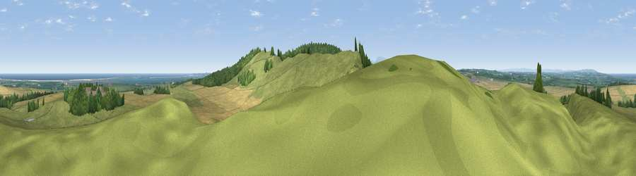

Viewpoint near Fenwick
#3752 in England · top 24% of its area beats it · near Fenwick · access?Where it is
The exact computed spot (NU 04450 39900). Click the marker for map links.
Public access: no public right of way or access land is recorded at this exact spot — it may be on private land. Computed from Natural England's CRoW access layer and OpenStreetMap rights of way — not the legal definitive map. Always verify locally.
The view, rendered

A 360° render of this exact spot computed from the terrain model, tree cover and land cover — summer colours, afternoon light, calibrated against photographs of famous viewpoints. Real trees, hedges and buildings will differ in detail.
The panorama
Grey silhouette: terrain skyline in each direction (720 bearings, Earth curvature and refraction included). Dashed green: skyline with trees (+15 m) and buildings (+8 m) as obstacles. Blue strip: how far the ground is visible on each bearing.
Where the view opens
Wedge length = distance to the farthest visible ground on that bearing (vegetation-aware). Rings at 10, 25 and 50 km.
What fills the view
60% grassland · 21% cropland · 14% woodland · 4% water ·
Angular shares of the visible panorama (visual magnitude), not map area. Landscape diversity 0.47 (0–1 Shannon).
Key numbers
More beautiful places nearby
The staircase of upgrades: each row has a higher view potential than everything closer. Driving times are estimates from straight-line distance, calibrated against real road routing — check an actual route before setting out.
| Place | Direction | Drive | Score |
|---|---|---|---|
| Viewpoint near Fenwick | S · 1 km | ~2 min | 78.7 |
| Viewpoint near Fenwick | S · 1 km | ~4 min | 80.7 |
| Greensheen Hill | SSE · 4 km | ~10 min | 87.5 |
| Viewpoint near Chillingham | SSE · 15 km | ~27 min | 88.1 |
| Ullock Pike | SW · 137 km | ~160 min | 89.4 |
| Long Side | SW · 137 km | ~160 min | 89.5 |
| Viewpoint near Easington | SSE · 139 km | ~162 min | 90.2 |
| The Knoll | S · 554 km | ~498 min | 91.0 |
55.65261, -1.93085 · source: screening · position refined by local search. Computed location — check access rights before visiting.